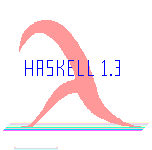

.
Last Modified On Thu Dec 8 02:32:27 GMT 1994 By Kevin Hammond
The Definition of Monadic I/O for Haskell 1.3
Haskell 1.3 is a revision of Haskell 1.2 (Hudak 92). This document defines a
standard monadic programming model for input/output (I/O) in Haskell
1.3. There is also a BIG unstructured version of this document,
suitable for printing, searching or FTPing. Note: to keep it
reasonably short and simple, the unstructured version does not include
any of the sample operating system bindings such as LibPOSIX, and tags refer to the
structured version.
A good general overview of the problems faced in designing an I/O
standard, with tips to help implementors and programmers maximise
portability can be found in
Plauger's book on the Standard
C library.
Purpose
The purpose of this definition is to provide a framework for Haskell
I/O on a variety of commonly used operating systems. This document
defines basic high-level I/O functionality for Haskell in a series of
Prelude and Library modules.
Entities defined in Prelude modules (whose names begin with
Prelude) are in scope unless explicitly renamed or
hidden. Entities defined in Library modules (whose names begin with
Lib) are in scope only if that module is
explicitly imported
 .
.
Conformance
A strictly-conforming Haskell 1.3 implementation implements the Core
I/O operations completely and exactly. A mostly-conforming Haskell
1.3 implementation implements a large subset of the Core I/O
operations, and provides full and complete documentation of any
extensions to or deviations from the semantics given here. For any
conforming implementation, all implementation dependencies which are
allowed by the standard must be explicitly documented.
Bindings
It is possible to build on this framework to produce implementations
which conform to accepted I/O standards or operating system
interfaces. One such "binding" (for the POSIX
standard -- IEEE 1003 --
LibPosix) has already been defined, and similar bindings
should be defined for the Win32 and Macintosh environments, amongst
others. As experience is gained with the I/O definition, it is
expected that some common functions will be promoted into the Core
I/O definition.
The Definition
Some of the computations defined here are specified in terms of other
Haskell functions. This is done solely to simplify the semantics
of the definition. An implementation is free to use any semantically
correct definition of these computations.
Bibliography
This is the Bibliography of
language standards,
operating system references,
and
functional programming references
consulted when defining this standard.
Recent Changes
A log of recent changes can be found here.